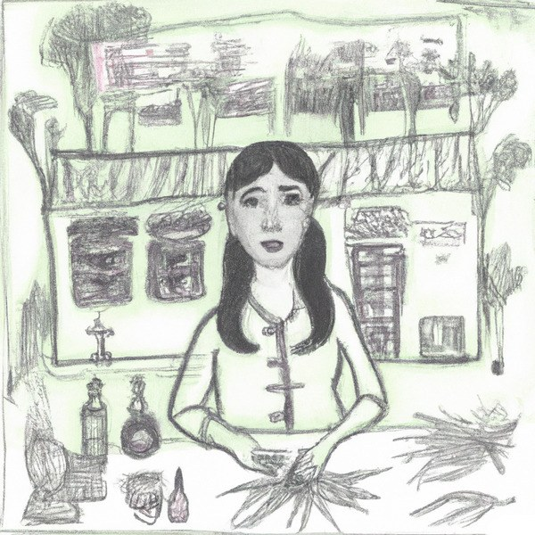
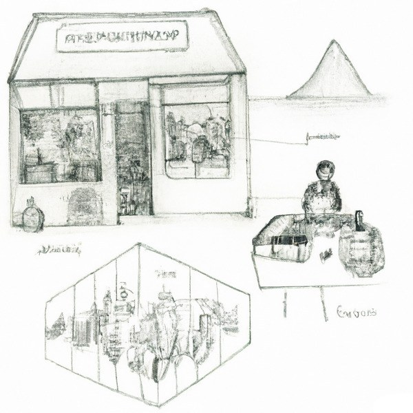
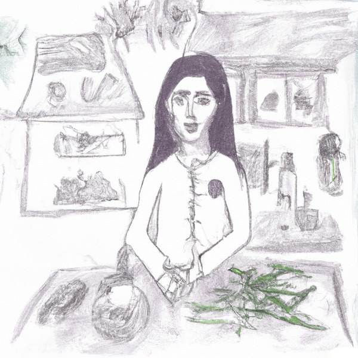
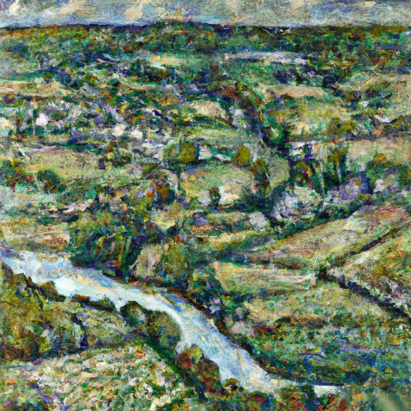
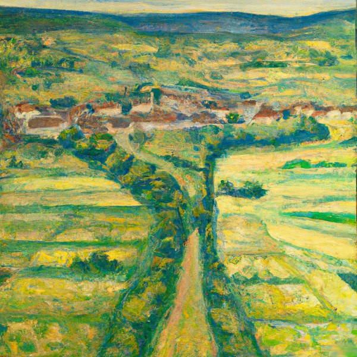

Lee Tusman
↩ Everyday
<
>
Title: Shopkeeper
Year: 2020
Medium: Small Tabletop Role-playing Game
Link: Shopkeeper on Itch.io
Description:
Shopkeeper is a small (sub-280 character) ruleset for a solo tabletop roleplaying game (solo ttrpg). More specifically it's a solo game you play by writing a player diary. The game was submitted to James Chip's first Micro fiction games jam event Flora, Fauna and Environment (2020), and published on a page and within the compiled PDF of all entries to the jam. The rules are also reproduced here:
Shopkeeper
You are a village shopkeeper. Sketch map of area and your shop. Roll d6. You sell
- plant
- medicinal herb
- liquid
- mineral
- scent
- artifact.
Sketch item. Log: Describe a customer, a price, did you haggle? What will they use it for? Repeat until you close for the day.





 ©opyleft
©opyleft